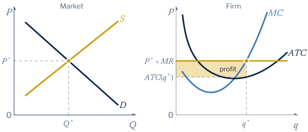
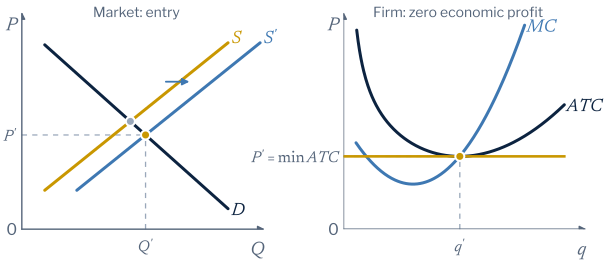
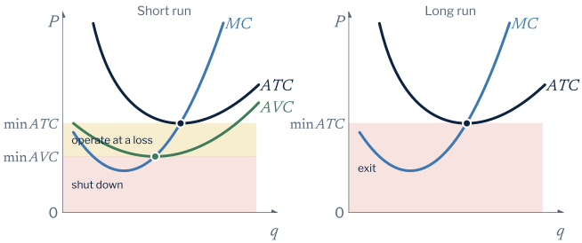
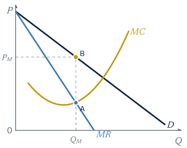
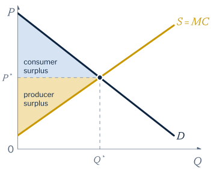
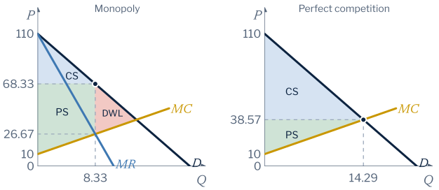

Lesson 9
FIN 30210 Managerial Economics
Jason R. Reed, PhD, University of Notre Dame
Markets run along a spectrum from perfect competition, through monopolistic competition and oligopoly, to monopoly. Four characteristics place a market on it:
Sellers The number and size distribution of sellers
Buyers The number and size distribution of buyers
Differentiation How different the products are
Entry and exit How easily firms enter and leave
Number and size of sellers
Directly affects a firm’s ability to set price. Many similarly sized firms keep any one firm from controlling price: pricing above or below the market rate could drop sales to zero or fail to maximize profit. An industry with one or a few producers that can satisfy market demand has price flexibility.
Number and size of buyers
Many small buyers will likely pay the same price. Buyers of a large share of industry output can extract price concessions.
Product differentiation
When products are undifferentiated, consumers choose on price. Differentiation goes with price control: the more differentiated the product, the more control.
Barriers to entry
Let existing firms influence output and pricing by keeping newcomers out, through patents or ownership of a unique resource, for example.
Barriers to exit
Can prevent resources from moving to other markets. How specialized the resources are dictates how easily they move.
Firms in a perfectly competitive industry are price takers with no market power. The market has

Industry supply and demand set the price every firm takes and the industry quantity. Each firm produces where \(P^* = MR = MC\).
Problem 9.1 A perfectly competitive industry has 1,000 identical firms. Market demand and supply are
\[ Q_D = 170{,}000{,}000 - 10{,}000{,}000P \qquad Q_S = 70{,}000{,}000 + 15{,}000{,}000P \]
Equilibrium
\(170{,}000{,}000 - 10{,}000{,}000P = 70{,}000{,}000 + 15{,}000{,}000P \Rightarrow P^* = 4\), and \(Q^* = 70{,}000{,}000 + 15{,}000{,}000(4) = 130{,}000{,}000\)
One firm
\(Q^*\) is the sum of all firms’ output, so \(q^* = 130{,}000{,}000 / 1{,}000 = 130{,}000\)
One firm leaves
Each firm supplies \(q_s = 70{,}000 + 15{,}000P\), so with 999 firms \(Q_S = 69{,}930{,}000 + 14{,}985{,}000P\). Price rises a little and quantity falls a little: \(P = 4.0052\) and \(Q = 129{,}948{,}000\).
Assume the perfectly competitive firm is a profit maximizer:
\[ \pi(Q) = TR(Q) - TC(Q) \qquad \frac{d\pi(Q)}{dQ} = \frac{dTR(Q)}{dQ} - \frac{dTC(Q)}{dQ} = 0 \;\Rightarrow\; MR = MC \]
Total revenue is \(TR = P \cdot Q\), and the firm takes \(P_0\) as given, so
\[ \frac{dTR(Q)}{dQ} = MR = P_0 = MC \]
Mathematically,
\[ \pi = TR - TC = P^* \cdot q^* - ATC(q^*) \cdot q^* \]
On the graph, profit is the rectangle between price and \(ATC(q^*)\), out to \(q^*\): total revenue \(0P^*Aq^*\) minus total cost \(0\,ATC(q^*)\,B\,q^*\).
We don’t draw the total cost function, so we rely on average total cost, \(ATC = TC/Q\).

Firms keep entering and exiting until there’s no incentive to do either: the break-even point, where \(P^* = ATC(q^*)\) and \(\pi = 0\).
This process needn’t be smooth or instantaneous.
\[ \pi = TR - TC = q_f\left(P^* - ATC(q_f)\right) < 0 \]
What happens to a firm facing an economic loss? Does it keep producing?
A manager facing an economic loss has two choices:
Shutting down is a short-run decision; exiting the industry is a long-run one. In the short run at least one resource is fixed, so resources can’t be fully reallocated.
Recall that \(ATC = AFC + AVC\).

Problem 9.2 A perfectly competitive firm faces the total cost function \(TC = 500 + 150Q - 20Q^2 + Q^3\). Below what price should it shut down?
\[ TVC = 150Q - 20Q^2 + Q^3 \qquad AVC = \frac{TVC}{Q} = 150 - 20Q + Q^2 \]
\[ \frac{dAVC}{dQ} = -20 + 2Q = 0 \;\Rightarrow\; Q = 10 \qquad AVC(10) = 150 - 20(10) + (10)^2 = 50 \]
Shut down if \(P < \$50\).
Problem 9.3 A perfectly competitive firm sells its good for $10, and its total cost function is \(TC = 100 + 2Q + 0.01Q^2\).
Profit
\(\pi = 10Q - (100 + 2Q + 0.01Q^2)\), so \(\dfrac{d\pi}{dQ} = 8 - 0.02Q = 0 \Rightarrow Q = 400\), and \(\pi = 4{,}000 - 100 - 800 - 1{,}600 = \$1{,}500\)
Break-even
\(ATC = 100Q^{-1} + 2 + 0.01Q\). Minimize: \(-100Q^{-2} + 0.01 = 0 \Rightarrow Q = 100\), and \(ATC(100) = 1 + 2 + 1 = \$4\)
Shutdown
\(AVC = 2 + 0.01Q\) is lowest at \(Q = 0\), where \(AVC = \$2\)
A single producer Faces a downward-sloping demand curve, because the firm is a price maker. The firm’s output is the industry’s output.
High barriers to entry Resource rights, patents, unique managerial talent, economies of scale, and government franchises.
Resource rights
Alcoa, an aluminum producer, once owned or controlled nearly all of the world’s bauxite deposits. Controlling a vital factor of production lets a firm control production for the whole industry.
Patent rights
The exclusive legal right to produce a good or service, which gives an incentive to invest in research and development. Should patents always exist? In health care?
Government franchise
Public utilities are given monopoly control because it’s more efficient for a single firm to produce. Major League Baseball is a legal monopoly exempt from antitrust regulation.
Nearly every barrier to entry depends on creating and enforcing private property laws. That’s why reverse engineering is so common where those laws, or their enforcement, don’t exist.

Problem 9.4 A monopolist’s total cost and demand equations are \(TC = 500 + 20Q^2\) and \(P = 400 - 20Q\). What are the profit-maximizing price and quantity?
\[ \pi = TR - TC = (400 - 20Q)Q - (500 + 20Q^2) \]
\[ \frac{d\pi}{dQ} = 400 - 40Q - 40Q = 0 \;\Rightarrow\; 80Q = 400 \;\Rightarrow\; Q^* = 5 \]
\[ P^* = 400 - 20(5) = 300 \]
Profits for a monopolist won’t be competed away as long as barriers to entry stay high.
Problem 9.5 What are the profit-maximizing price, quantity, and profit for a monopolist facing these demand and cost functions?
\[ Q = 3{,}000 - 60P \qquad TC = 100 + 5Q + \tfrac{1}{480}Q^2 \]
Profit has to be written in terms of \(Q\) alone, so first invert demand: \(\tfrac{1}{60}Q = 50 - P \Rightarrow P = 50 - \tfrac{1}{60}Q\).
\[ \pi = \left(50 - \tfrac{1}{60}Q\right)Q - \left(100 + 5Q + \tfrac{1}{480}Q^2\right) \]
\[ \frac{d\pi}{dQ} = 50 - \tfrac{1}{30}Q - 5 - \tfrac{1}{240}Q = 0 \;\Rightarrow\; 45 = \tfrac{9}{240}Q \;\Rightarrow\; Q^* = 1{,}200 \]
\[ P^* = 50 - \tfrac{1}{60}(1{,}200) = 30 \qquad \pi = (1{,}200)(30) - \left(100 + 5(1{,}200) + \tfrac{1}{480}(1{,}200)^2\right) = 26{,}900 \]
A profit-maximizing monopolist’s first-order condition is
\[ \frac{d\pi(Q)}{dQ} = \frac{dTR(Q)}{dQ} - \frac{dTC(Q)}{dQ} = 0 \]
We can rewrite it to include the demand curve. Since \(TR = P(Q) \cdot Q\),
\[ P + Q\left(\frac{dP}{dQ}\right) - MC = 0 \;\Rightarrow\; -Q\left(\frac{dP}{dQ}\right) = P - MC \]
\[ -\frac{Q}{P}\left(\frac{dP}{dQ}\right) = \frac{P - MC}{P} \;\Rightarrow\; -\frac{1}{\varepsilon_P} = \frac{P - MC}{P} \]
\[ -\frac{1}{\varepsilon_P} = \frac{P - MC}{P} \]
A profit-maximizing monopolist always operates where demand is price elastic.
Lerner index \(L = \dfrac{P - MC}{P}\), the negative inverse of the price elasticity of demand, and a measure of monopoly power.
Problem 9.6 The market price in a perfectly competitive industry is $10, and an individual firm’s total cost equation is \(TC = 100 + 6Q + Q^2\). What is the Lerner index?
\[ \pi = 10Q - (100 + 6Q + Q^2) \qquad \frac{d\pi}{dQ} = 10 - 6 - 2Q = 0 \;\Rightarrow\; Q^* = 2 \]
\[ MC^* = 6 + 2(2) = 10 \qquad L = \frac{P - MC}{P} = \frac{10 - 10}{10} = 0 \]
Problem 9.7 A monopolist faces demand \(P = 10 - Q\) and total cost \(TC = 100 + 6Q + Q^2\). What is the Lerner index?
\[ \pi = (10 - Q)Q - (100 + 6Q + Q^2) \qquad \frac{d\pi}{dQ} = 10 - 2Q - 6 - 2Q = 0 \;\Rightarrow\; Q^* = 1 \]
\[ P^* = 10 - 1 = 9 \qquad MC^* = 6 + 2(1) = 8 \qquad L = \frac{9 - 8}{9} = \frac{1}{9} = 0.11 \]
About 11% of the monopolist’s price is markup over marginal cost.
Perfectly competitive firms Produce where \(MR = MC\), at a quantity greater than a monopolist’s. Price is set where MC meets demand, so \(P_{PC} < P_M\). Prices fluctuate as entrants erode profits and exiters reduce losses.
Monopolists Produce where \(MR = MC\), but extract “rents” by choosing a smaller quantity. They produce on the elastic portion of demand and set price from the demand curve at that quantity. No one enters as long as barriers to entry stay high.
At what price should a government-franchised monopoly operate?

When we discuss welfare, we mean consumer and producer surplus.
Consumer surplus is what consumers were willing to pay minus what they actually pay: the area below demand and above price, out to \(Q\).
Producer surplus is what producers receive minus the minimum they’d accept: the area above supply (MC) and below price, out to \(Q\).
Perfect competition Maximizes total welfare for consumers and producers. The marginal benefit of consuming equals society’s marginal cost of producing. It’s the “ideal” market structure because all of society’s benefits are captured.
Monopoly Consumers are worse off and producers better off: welfare transfers from consumers to producers. Charging higher prices erodes total welfare, so monopoly creates deadweight loss.
Problem 9.8 A monopolist faces demand \(Q = 22 - 0.20P\) and total cost \(TC = 100 + 10Q + Q^2\).
Price and quantity
\(P = 110 - 5Q\) and \(\dfrac{d\pi}{dQ} = 100 - 12Q = 0\), so \(Q^* = 8.33\) and \(P^* = 68.33\)
Consumer surplus
Area below demand and above price: \(\tfrac{1}{2}(110 - 68.33)(8.33) = 173.61\)
Producer surplus
\(MC = 10 + 2Q\), so \(MC(Q^*) = 26.67\). Area below price and above MC: \((68.33 - 26.67)(8.33) + \tfrac{1}{2}(26.67 - 10)(8.33) = 416.67\)
Deadweight loss
Competitive output is where \(MC = D\): \(10 + 2Q = 110 - 5Q \Rightarrow Q_{PC} = 14.29\). \(DWL = \tfrac{1}{2}(68.33 - 26.67)(14.29 - 8.33) = 124.01\)

\(P_{PC} = 110 - 5(14.29) = 38.57\)
\(CS = \tfrac{1}{2}(110 - 38.57)(14.29) = 510.20\)
\(PS = \tfrac{1}{2}(38.57 - 10)(14.29) = 204.08\)
\(DWL = 0\)
Up next: Lesson 10
FIN 30210 Managerial Economics